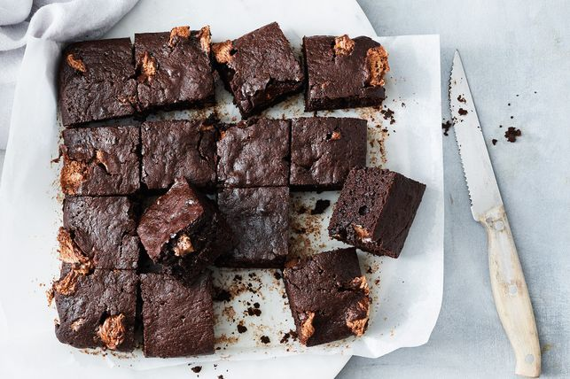

Easy Mars bar brownies

Description
Turn one of your favourite chocolate bars into these fudgy and moist 5-ingredient brownies that everyone will love.
Ingredients
16 pieces
- 6 x 53g Mars bars, chopped
- 100g butter, chopped
- 3 eggs, lightly whisked
- 75g (1/2 cup) self-raising flour
- 50g (1/2 cup) cocoa powder
- Select all ingredients
Preparation
-
Preheat the oven to 160C/140C fan forced. Grease a square 18cm cake pan and line the base with baking paper, extending up 2 sides.
-
Combine the chopped Mars nd butter in a heatproof bowl and stand the bowl over a pan of simmering water (don’t let the bowl touch the water).
Heat, stirring occasionally, until the butter and chocolate have melted but lumps of nougat remain. Remove from the heat and set aside to cool slightly.
-
Add the egg to the chocolate mixture and stir to combine. Sift in the flour and cocoa powder.
Fold to combine. Transfer the mixture to the prepared pan, smoothing the top.
Bake for 30 minutes or until a skewer inserted into the middle of the brownie comes out with crumbs clinging slightly.
Allow to cool in the pan for 10 minutes. Use the paper to lift the brownie from the pan and cut into squares.
Serve warm or at room temperature.
Nutrition Per Serving
173 calories per serve